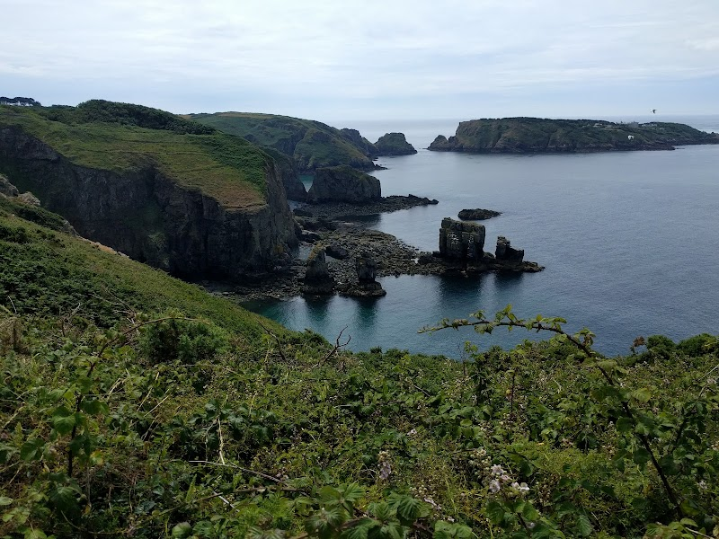

Photo Gallery


A hidden sea cave accessible at low tide, shrouded in folklore and perfect for family adventures.
Guernsey AttractionThe Fairy Grotto is exactly what its name suggests - a magical, hidden sea cave that captures the imagination of children and adults alike. Accessible only at low tide, this small cave has become one of Guernsey's most charming hidden attractions.
Local folklore holds that fairies once inhabited this cave, emerging at night to dance on the surrounding rocks. While modern visitors may not spot actual fairies, the cave's ethereal lighting and echoing acoustics create an otherworldly atmosphere that explains the legend's origin.
The cave is small but perfectly formed - a narrow entrance opens into a chamber just large enough for a small family to stand inside. Sunlight streaming through the entrance creates beautiful light patterns on the walls, especially in the afternoon.
The grotto is particularly popular with families. Children love the sense of discovery and the storytelling potential. Bring a torch to explore the darker corners, though the cave is safe and stable.